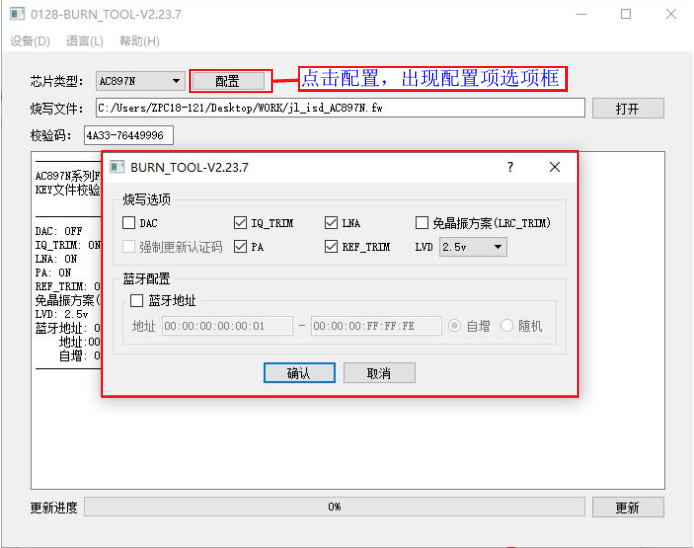

1.5. 各型号芯片PC端烧录配置项介绍
Note
如果希望把这些勾选项固定在 FW/UFW 文件中设置，避免每次部署重新选择，可以参考：如何在生成烧录文件时设置烧录选项
1.5.1. 打开并选择配置项
更新fw烧录文件时，PC端更新程序界面有一个“配置”控件，点击“配置”控件，出现很多可选的或需要配置的配置项，正常情况下默认就好，但也可以根据客户需要进行选择。
例如打开V2.23.7版本更新AC897N芯片程序的配置界面，可看到的配置项有DAC、IQ_TRIM、LNA、免晶振方案（LRC_TRIM）、强制更新认证码，PA、REF_TRIM、LVD、蓝牙配置，如芯片烧录配置界面所示。
加载目标芯片程序fw文件后对各配置项进行配置，点击更新即可更新目标芯片程序和配置信息到烧录器。

芯片烧录配置界面
Note
不同版本烧录器固件的配置界面可能不一致，请及时更新到最新的烧录器固件。
1.5.2. 各型号芯片常用配置项介绍
不同型号芯片的烧录配置项基本相同，不同芯片的配置项名字一致其实际作用也相同。以下通过表格的形式对各个系列芯片的一些常用配置项进行介绍说明，烧录时可根据实际需要进行配置。
配置项 |
配置项说明 |
|---|---|
REF_TRIM |
勾选，进行芯片adc基准源校准,芯片外供电压参考源；用与避免前期未校准芯片流入生产环节 |
REF_IO |
下拉选项为REF_TRIM对应的2.5V参考电压连接的芯片IO引脚，根据实际烧录座硬件电路进行选择； |
免晶振方案（LRC_TRIM） |
勾选，对无需外挂晶振的芯片进行LRC时钟校准，使用芯片LRC时钟源作为系统时钟 |
LVD电压 |
配置芯片低电复位的电压值，二次烧录要配置成相同值否则报错不能继续烧录， |
强制更新认证码 |
勾选，非空片烧录时候如芯片内原来已烧录有认证码数据将会被覆盖再烧录一个新的认证码， |
多算法授权强制更新 |
勾选，如芯片已烧录了授权数据到芯片，勾选此选项后执行二次烧录， |
蓝牙地址 |
勾选，配置输入蓝牙地址范围，同时勾选自增， |
电池方案 |
根据芯片使用的电池类型对应工作电压，配置芯片低电复位的LVD电压值； |
AC95N/AC96N烧录选项 |
线性充电电流档位（mA）:根据设计方案配置线性充电电流档位； |
使能（引脚）短按复位功能 |
勾选，烧录相应配置值到芯片，使能芯片的短按复位功能。 |
使能（引脚）长按复位功能 |
勾选，烧录相应配置值到芯片，将使能芯片的长按复位功能。 |
裸片烧录 |
勾选，烧录直接打黑胶封装形式已经贴片的芯片 |
空片烧录 |
勾选，不检查flash数据是否为全FF和不对flash进行擦除操作（芯片出厂前flash数据为全FF，不需要进行擦除动作）； |
擦除整个flash |
勾选，保证芯片flash整片数据为全FF，才进行程序数据烧录； |
功耗测试(uA):xxx |
选择 OFF,不对芯片进行软关机功耗测试； |
Flash Lvd电压匹配 |
勾选，对芯片Flash支持的最低工作电压和所选择lvd电压进行匹配性检查； |
充电使能 |
它是芯片上电初始阶段VBAT的输出控制配置项，默认勾选该选项， |
串口控制烧录 |
勾选，可使用RS232串口通过“PC蓝牙地址烧录工具”控制烧录器烧录蓝牙地址， |
烧录电压 |
选Default,烧录座是带LDO转换电路的即芯片供电是通过烧录器排针6.5V转为芯片需要的4.2V等电压进行烧录; |
XOSC_PIN_MODE |
自动：烧录器会自动识别芯片是单脚振还是双脚振模式； |
PB1_PU_TRIM |
勾选，对芯片PB1上拉电阻进行校准，应用与PB1接AD KEY按键方案,保证AD键值不冲突 |
otp重新烧写 |
勾选，otp烧录异常的芯片会再次执行一次异常烧录 |
POWERON_TIME |
指烧录成功后烧录器对芯片复位后上电的时间，单位是mS;该配置只有AC632N使用 |
带晶振烧录 |
指烧录座硬件环境即上层板是否接晶振进行烧录，勾选，可处理免晶振方案下因环境导致的烧录通信不稳定问题； |
断电持续时间（毫秒） |
烧录完需要对芯片上电运行SDK执行蓝牙trim（校准）操作时, |
上电持续时间（毫秒） |
烧录完需要对芯片上电运行SDK执行蓝牙trim（校准）操作时, |
筛选测试项 |
用于筛选各测试项参数不达标芯片，避免此类不良芯片流入后续生产环节 |
SFC校验 |
根据开发方案选择音箱方案或其他方案，烧录时在所选方案使用的电压测试条件 |
LOOP_BACK |
勾选，进行蓝牙性能相关的参数测试，用于筛选参数不达标的芯片 |
DAC |
勾选，进行DAC模块各项电压测试用于筛选DAC参数不达标即如有杂音类的芯片 |
IQ_TRIM |
勾选，进行蓝牙相关校准参数测试，测试芯片发送到接收通路功能 |
LNA |
勾选，进行蓝牙接收性能测试用于筛选芯片LNA内部晶体管受损芯片； |
PA |
勾选，进行蓝牙发送性能测试用于筛选蓝牙发送参数不达标的芯片 |
DACVDD |
勾选，筛选封装混料，导致dacvdd异常芯片 |
LNA_BIAS |
勾选，进行蓝牙相关校准参数测试，筛选蓝牙相关参数不达标的芯片 |
USB筛选模式 |
有正常烧录，严格筛选模式，针对AC695X设计方案 |
DAC OS |
勾选，用于筛选AD698N/AC638N DAC 二极管特性异常芯片； |
RAM全面测试 |
勾选，用于筛选芯片RAM模块异常，表现为不开机，开机异常的芯片 |
RAM_240M |
勾选，用于筛选芯片时钟240M下，RAM模块异常，表现为不开机，开机异常的芯片 |
ROM_240M |
勾选，用于筛选芯片时钟240M下，ROM模块异常，表现为不开机，开机异常的芯片 |
FTMAX_240M |
勾选，用于筛选芯片时钟240M下，FTMAX模块异常的芯片 |
DC TEST |
勾选，测试LDO电压挡位，筛选因过压损伤导致挡位电压异常的坏片。 |
UMDC |
勾选，配合LOOP_BACK进行测试，筛选蓝牙相关参数不达标芯片 |
ighg |
勾选，用于筛选蓝牙性能参数不达标的芯片 |
fdiv |
勾选，用于筛选浮点除法器异常芯片 |
IO |
勾选，用于筛选打线有交丝风险即芯片IO异常的芯片； |
IO_TEST |
勾选，用于筛选打线有交丝风险即芯片IO异常的芯片； |
BTPLL |
勾选，测试本地振荡器产生的本振频率（载波）是否正确，筛选BTPLL异常芯片 |
BTDC_SP |
勾选，筛选蓝牙相关的BTDC_SP模块异常芯片 |
AUDIO_RAM |
勾选，筛选不同频率，电压条件下，AUDIO_RAM读写异常的芯片 |
BTDC_AUADC |
勾选，筛选蓝牙发射功率偏低，对应的AUADC模块异常的芯片 |
SRC |
勾选，筛选音频SRC模块异常的芯片 |
LRC_DIFF |
选择百分比，烧录时候进行LRC时钟当前校准值和已校准值对比，两者偏差超配置的百分比当不良片处理； |
功耗测试 |
选择OFF，表示不进行功耗测试；输入非0的数值，表示烧录时对芯片进行软关机功耗测试； |
使用pdown方案 |
选择是，即如果方案使用了低功耗唤醒功能， |